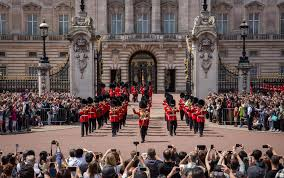

LONDRA
Ecco a voi alcuni posti da visitare a Londra
- Big Ben è il soprannome della campana più grande della torre dell'orologio St. Stephen del palazzo di Westminster, a Londra. Per tradizione l'uso del nome si è esteso anche all'orologio e all'intera torre in stile neogotico, alta 96 metri, la cui edificazione iniziò nel 1834 e si concluse nel 1858.
Conosciuta come Clock Tower (Torre dell'Orologio), il nome fu cambiato ufficialmente in Elizabeth Tower, in occasione del Giubileo di diamante di Elisabetta II del giugno 2012. Questa torre campanaria suona ogni quarto d'ora.
Dal 21 agosto 2017 la torre dell'orologio è stata chiusa al pubblico per dei lavori di manutenzione che si sono protratti fino al 13 novembre 2022. Fino ad allora le campane non hanno mai suonato, tranne in occasioni importanti e festività.
- La spettacolarità dei palazzi combinata con la formalità militare, la parata, le uniformi colorate dei soldati e la musica dell'orchestra militare è uno spettacolo che attira molta attenzione.
Ci sono diversi Paesi in Europa che celebrano il solenne cambio della guardia davanti ai loro palazzi reali (è il caso della Norvegia, della Danimarca, del Principato di Monaco o della Spagna), ma è quello dell'Inghilterra il più popolare di tutti e quello che ha trasformato questa cerimonia in un'attrazione turistica, quindi non volevo perdermelo per nessun motivo!
Quando si può assistere al Cambio della Guardia a Londra e quanto dura?
La parata dura circa 45 minuti e si svolge ogni giorno alle 11 in giugno e luglio. Nel resto dell'anno si tiene ogni altro giorno (lunedì, mercoledì, venerdì e domenica), tranne quando piove, perché di solito l'esibizione viene annullata.

torna alla HOME